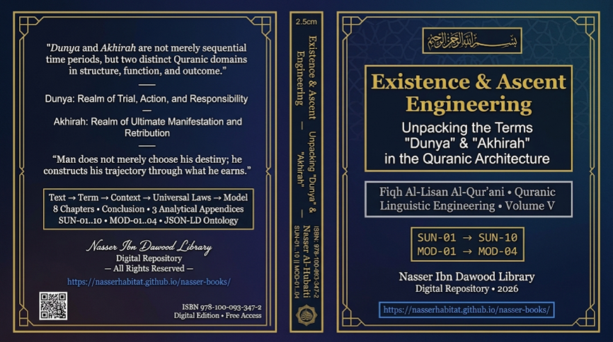

Nasser Ibn Dawood

Text extracted from the author-supplied Word edition; consult the original source.
Preparing the reader…
Existence & Ascent Engineering
Unpacking the Terms "Dunya" & "Akhirah" in the Quranic Architecture
Author: Nasser Ibn Dawood
Series: Fiqh Al-Lisan Al-Qur'ani (Quranic Linguistic Engineering) – Volume V
Digital Library: 69 Volumes (Arabic/English) – 2026
I. The Global Knowledge Manifesto
Knowledge is a universal right. The author firmly believes that wisdom should not be locked behind paywalls or language barriers.
Global Access Policy: All books in this library are available for free in multiple digital formats (PDF, HTML, DOCX, TXT).
The Digital Library: As of early 2026, the collection hosts 69 volumes (35 in Arabic and 34 in English), fully optimized for AI-assisted research and digital archiving.
Official Platforms:
Main Website: nasserhabitat.github.io/nasser-books/
GitHub: nasserhabitat/nasser-books
II. Translator's Note: The Bridge of Meaning
This English edition is a condensed conceptual adaptation. It is not a word-for-word translation, but rather an "extraction of essence." It presents the core philosophical framework in accessible English, omitting the exhaustive linguistic debates and classical references found in the original Arabic text.
For the academic researcher: The original Arabic version remains the primary source for comprehensive linguistic analysis, detailed exegesis (Tafsir), and the complete bibliography.
Executive Summary & Core Framework
1. The Great Epistemological Shift
The central crisis in traditional and modern thought regarding the Quran lies in reducing its profound terms to mere cultural or temporal labels. Conventional readings flatten "Dunya" (often translated as "this world") and "Akhirah" ("the hereafter") into a simple timeline: life now → death → life later.
This research argues that the Quran is not written in a human language (Lughah) that evolves with culture, but in a divine linguistic code (Lisan) —a closed, mathematically precise system where every letter and root carries precise existential geometry. The Uthmanic script itself functions as a visual code describing the fundamental laws of reality.
2. Redefining the Core Terms
Term
Root
Conventional View
Engineering View
Dunya
D-N-W (closeness, lowliness)
This earthly life (a time period)
A low-level existential state: a closed, high-entropy biological system confined to immediate needs and material causality
Akhirah
A-Kh-R (deferral, ultimate)
The afterlife (a future time)
The governing, open-system macro-architecture of reality: a state of transcendence, negentropy, unlimited vitality, and complete alignment with divine norms
Grand Systemic Law: Dunya and Akhirah are not two sequential time periods or adjacent physical locations; they are two distinct existential realms in structure, function, and destination.
3. The Human Engineering Model
The human being is not merely a biological machine nor a pure spirit trapped in matter. The Quran presents a fourfold functional architecture:
Component
Root Meaning
Role
Soul (Nafs)
N-F-S (breath, selfhood)